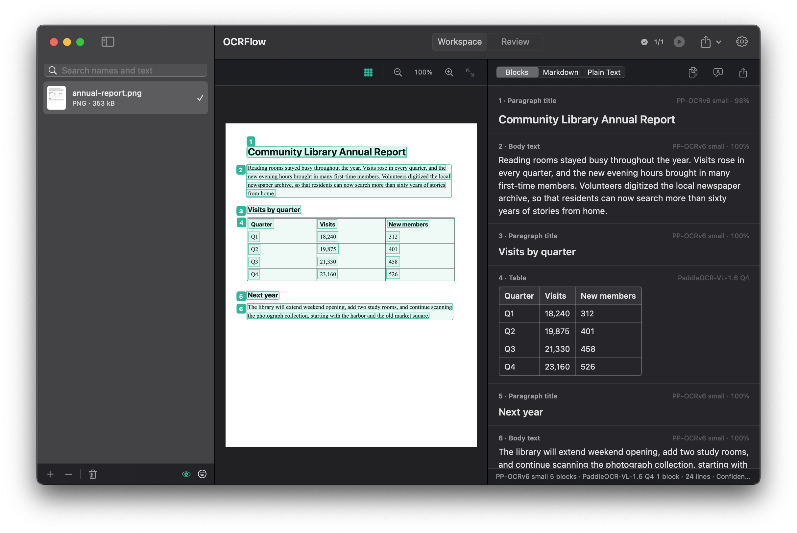

Choose it. Read it.
Press the shortcut in any app, drag out an area or click a window, and pick from the bar beside it: recognize, long screenshot, save or copy.
⌥⇧⌘2
Read scans and PDFs by the folder, capture from any app, or show OCRFlow once how to turn a page and let it assemble the whole document.
Free and open source · macOS 15 or later · Apple silicon and Intel · Signed and notarized

The app itself, reading a made-up report.
The film
Reading
Keep scrolling. This one is being read as you go.
Layout
Headings, paragraphs, tables and formulas each get their own block, in reading order.
Results
Tables stay tables and formulas stay formulas. Check it, correct it, export it.
Reading rooms stayed busy throughout the year. Visits rose in every quarter, and the new evening hours brought in many first-time members. Volunteers digitized the local newspaper archive.
| Quarter | Visits | New members |
|---|---|---|
| Q1 | 18,240 | 312 |
| Q2 | 19,875 | 401 |
| Q3 | 21,330 | 458 |
| Q4 | 23,160 | 526 |
(23,160 − 18,240) ÷ 18,240 = 27%The library will extend weekend opening, add two study rooms, and continue scanning the photograph collection.
Capture
A capture engine built for reading. OCRFlow stays out of the way: it never comes forward, so the window you are capturing looks exactly as it did.
Press the shortcut in any app, drag out an area or click a window, and pick from the bar beside it: recognize, long screenshot, save or copy.
Scroll by hand or let Auto Scroll do it. The joined picture grows beside the page as you go, and is read as pages so small text stays sharp.
Drag out area after area, with no shortcut in between, turning pages as usual. Esc ends it.
A small button floats above every window. Click it to capture; point at it and Queue Screenshots and Record Actions open out. Or start from the menu bar, even with the main window closed.
Record Actions
Clicks, keys, typing, scrolls, captures: whatever you do, OCRFlow can repeat. It knows nothing about any particular app or site, so it works with all of them.
Capture a slide and press →, say. Every step can be edited afterwards.
A set number of times, or until the screen stops changing, and optionally on each of a list of web addresses.
One document, one long picture or separate pictures, recognized when it ends. Or only saved.
Smart Layering
Fast where the page is simple, careful where it is not. You do not have to choose.
A PDF with trustworthy text of its own keeps it as it is. Anything else is split into regions by the layout model.
Regions are flagged with a specific reason: low confidence, output cut off, two readers disagreeing. Your corrections are never overwritten without asking.
Every document stays in the history, searchable by any phrase, Chinese included.
Combined into one file, or one per source with the folder structure kept.
Drop in images, PDFs or folders. The list and every result survive quitting, and nothing is read twice.
Files that land in a watched folder are read once they finish copying, and the results are exported for you.
Results can be translated with Apple’s Translation framework. The text is translated on your Mac.
Simplified and Traditional Chinese, English, Japanese and 46 Latin-script languages, read by one model that ships inside the app.
Korean, Arabic, Cyrillic, Thai, Greek and Devanagari install from the model manager.
Privacy
Yes. OCRFlow is open source under the MIT license, with no account, subscription or limit.
macOS 15 Sequoia or later, on Apple silicon or Intel. Releases are signed and notarized by Apple, and update themselves.
Text in 50 languages works straight away, with the 69 MB app. The layout model and close reading, which handle tables, formulas and complex layouts, are about 1 GB, so you choose whether to add them.
Screenshots need macOS’s Screen Recording permission. Record Actions, Queue Screenshots and Auto Scroll also need Accessibility, to follow and repeat your clicks and keys. It only watches while you record or capture.
Text typed during a recording is saved as typed, in the recording on your Mac, so avoid typing passwords while recording. Nothing is watched outside a recording or capture.
No. Download it here. It installs like any other Mac app and keeps itself up to date.
Now they can all be yours.
Version 1.3.0 · 69 MB · macOS 15 or later